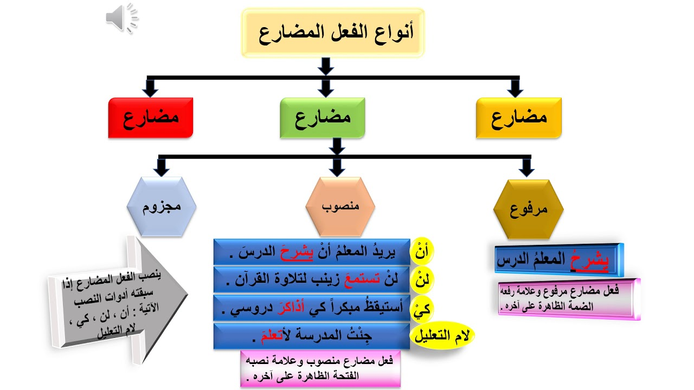

الفعل المضارع
اقسام الفعل المضارع
صحيح الاخر
معتل الاخر
الاففعال الخمسة
صحيح الاخر يرفع بالضمة وينصب بالفتحه ويجزم بالسكون
المعتل الاخر يوجد له ثلاثه احرف و هم :(و,ا,ي)
المعتل الاخر بالواو والياء يرفع بالضمة المقدرة وينصب بالفتحة الظاهرة ويجزم بحذف حرف العلة
معتل الاخر بالالف يرفع بالضمة المقدرة وينصب بالفتحة المقدرة ويجزم بحذف حرف العلة
الافعال الخمسة ترفع ب ثبوت النون وتنصب وتجزم بحذف النون
امثلة الفعل المضارع
يأكلُ: فعل مضارع مرفوع، وعلامة رفعه الضمة الظاهرة
لن يسعى: فعل مضارع منصوب، وعلامة نصبه الفتحة الظاهرة
لم يذهب: فعل مضارع مجزوم، وعلامة جزمه السكون
يكون الفعل المضارع مرفوع اذا لم يسبقه اداة نصب او اداة جزم
اداوات نصب الفعل المضارع(ان,لن,كي,حتى,لام التعليل,إنّ,كأن,لعل)
اداوات جزم الفعل المضارع(لمْ، لَمّا، لام الأمر، لا الناهية، إنْ، ما، مَنْ، أنّى، مهمَا، أيّ، متَى، أيّانَ، أيْنَ، إذْما، حَيْثُمَا، كَيْفَمَا، إِذَا)

العودة للصفحة الرئيسية